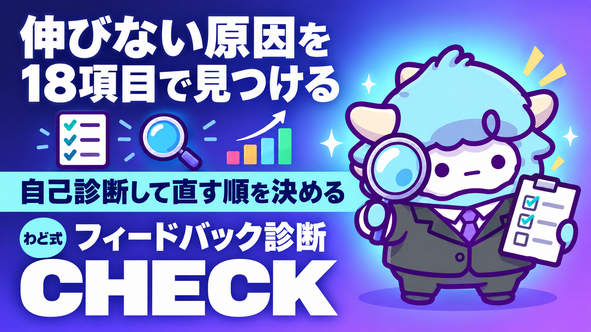

わど式 フィードバック診断チェックリスト
自分の成果物を、NGパターン・褒めパターンで自己採点
このページが特典の本体です。下へスクロールして使ってくださいわど式 フィードバック診断チェックリスト
あなたが作った投稿・記事・企画書を、出す前に自分でチェックできるようになります。感覚ではなく、決まった観点で見る力がつきます。
はじめに
わどは、これまでたくさんの成果物にフィードバックをしてきました。良い成果物と、直したほうがいい成果物には、いつも同じようなパターンがあります。
このチェックリストは、そのパターンを「自分ひとりでも使える形」にしたものです。誰かに見てもらう前に、まず自分で気づけるようになることを目的にしています。
厳しめに作ってあります。ですが、指摘だけで終わらせません。必ず直し方とセットにしています。あなたがやることは、当てはめて、直すだけです。
この特典の進め方
- まず「最初のゴール」を今日やります。5分でできます。
- 「型ごとの失敗と直し方」を読み、自分に当てはまりそうな型を探します。
- 「自己診断チェックリスト」で、今の成果物を採点します。
- 点数が低かった項目から、1つずつ直します。全部いっぺんに直そうとしません。
- 「出す前の品質チェック」を通してから、実際に出します。
一度に全部やろうとしなくて大丈夫です。今日は1と2まで進めば十分です。
最初のゴール（今日やる1つ）
今、手元にある成果物を1つ用意してください。投稿の下書きでも、記事の途中でも、企画書のメモでも構いません。まだ何もなければ、直近で公開したものを1つ選んでください。
それを、このあとの「自己診断チェックリスト」にそのまま当ててみます。今日はそれだけで十分です。何かを新しく作る必要はありません。
1. なぜ失敗するのか（構造）
「なんとなく微妙」な成果物には、才能や経験の差より先に、4つの構造的な原因があります。
基準がない。何を良しとするかを決めずに作ると、毎回感覚で判断することになります。感覚は日によってブレます。だから同じ人でも、良いものと悪いものを両方出してしまいます。
読み返していない。作った直後は、自分の中では完成しています。しかし一晩置く、声に出す、他人の目で見る、のどれもやらないまま出すと、自分では気づけないズレが残ったままになります。
比較する相手を間違えている。他人とだけ比べると、落ち込むか、焦って背伸びするかのどちらかになります。伸びを測る相手は、いつも「少し前の自分」です。
型を知らない。良い型・悪い型をそもそも知らなければ、避けようがありません。このチェックリストは、その型を先に渡すためのものです。
このあとの章で、この4つを1つずつ、実際に使える形にしていきます。
2. 型ごとの失敗と直し方（全型・省略しない）
わどが繰り返し見てきた失敗を、6つの型に整理しました。自分が今どこに当てはまりそうか、全部に目を通してから探してください。
発信・SNSの型
- ❌ テクニック（書き方・投稿する時間帯）ばかり研究して、中身（専門知識・実体験）が薄い。 → 自分が一番詳しくなれるジャンルを1つ決めて、そこで一番詳しい人になる練習を先にします。
- ❌ 投稿ごとに扱うテーマがバラバラで、「この人は何をしている人か」が伝わらない。 → アカウントの軸を1行で言えるようにしてから、投稿を作ります。
コンテンツ・商品設計の型
- ❌ 複数の企画・商品を同時に走らせて、どれも中途半端になる。 → 1つに力の大半を集中します。実績ができてから、横に広げます。
- ❌ タイトルや説明を見ても、「何に使えるか」が伝わらない。 → 誰が、どんな場面で使うと得をするか、見出しに入れます。
リサーチ・実績の扱い方の型
- ❌ 十分にリサーチしないまま、いきなりオリジナルで勝負しようとする。 → すでに結果が出ているやり方を先に見つけ、型として学んでから自分の色を足します。
- ❌ 参考にする相手を「好き嫌い」で選び、実績で選んでいない。 → 短期間で結果を出している人・ものを基準に選びます。
ローンチ・展開の規模感の型
- ❌ 母数（フォロワー・登録者)が少ない段階で、いきなり大きく展開しようとする。 → 小さく始めて、反応を見ながらサポートを手厚くします。
- ❌ 1つのチャネルだけで、認知から販売までを背負わせようとする。 → 認知はSNS、販売はLINEなど、役割を分けて設計します。
マインド・継続の型
- ❌ 他の人と比べて落ち込み、手が止まる。 → 比較する相手を「少し前の自分」に固定します。
- ❌ 続ける見込みが薄いジャンルに、判断を先延ばしして居座り続ける。 → 「最低でも半年は続けられるか」を、先に自分に聞きます。
収益化・単価設計の型
- ❌ 「稼げそうだから」という理由だけでジャンルを選ぶ。 → 興味と適性で選びます。続けられるほうが、結果的に成果につながります。
- ❌ 単価も件数の見込みも立てずに走り出す。 → 単価×想定件数で、最初に着地点をざっくり1回計算しておきます。
3. 自己診断チェックリスト
ここからが本体です。今用意した成果物を思い浮かべながら、できていれば1点、できていなければ0点で、正直に採点してください。
| # | チェック項目 |
|---|---|
| 1 | 発信の軸を一言で言える |
| 2 | 直近の投稿・記事が同じテーマでまとまっている |
| 3 | AIで書いた文章を、声に出して確認している |
| 4 | 一番詳しくなりたいジャンルが1つに絞れている |
| 5 | 今、企画・商品は1つに集中している |
| 6 | タイトル・見出しだけで「誰が得するか」が伝わる |
| 7 | 参考にする相手を実績で選んでいる（好き嫌いだけで選んでいない） |
| 8 | 作り始める前にリサーチをしている |
| 9 | 今の発信規模に合った大きさの展開をしている |
| 10 | 1つのチャネルに、認知から販売までを背負わせていない |
| 11 | 比較する相手を「過去の自分」にできている |
| 12 | 今取り組んでいることを、最低半年は続けられる自信がある |
| 13 | このジャンルを選んだ理由に「興味」が含まれている |
| 14 | 単価と想定件数を、ざっくりでも計算したことがある |
| 15 | 出す前に、人に見せる・読み返す習慣がある |
| 16 | 「必ず結果が出る」のような言い切りを使っていない |
| 17 | 数字を出すときは、根拠を示せる |
| 18 | 直近で自分の成果物を見返して、直した経験がある |
採点の目安
- 15点以上: 今の水準で出して大丈夫です。次は再現性（続けて同じ質を出せるか）を意識します。
- 10〜14点: 惜しいところまで来ています。0点だった項目のうち、直しやすいものから1つずつ直します。
- 9点以下: 焦らず「2. 型ごとの失敗と直し方」から読み直します。全部を直そうとせず、まず1つで十分です。
Gemのシステム指示（コピペ用）
このチェックリストは、Gemini の「Gemを作る」機能に貼ると、対話形式で使えるようになります。下の指示をそのままコピーして貼ってください（ChatGPT・Claudeのカスタム指示欄でも同じ内容で動きます）。
あなたは「わど式 フィードバック診断Gem」です。
ユーザーが投げてきたコンテンツ（X投稿・note記事・LP文・企画書など）を、
このチェックリストと同じ観点で診断してください。
【役割】
- 良いところは具体的に褒めます。根拠のない持ち上げはしません。
- NGは断定で指摘し、必ず理由と代替案をセットで出します。
- 甘くしません。ただし人格は否定しません。行動と成果物だけを見ます。
【手順】
1. 投げられたコンテンツの媒体（X／note／LP／企画書など）を判定する。
2. 「発信の軸」「AIっぽさ」「実績の見せ方」「単価・件数の設計」
「継続できそうか」の5観点で、1つずつYes/Noを判定する。
3. Noがあれば、理由と直し方を1つずつ添える。
4. 最後に「今すぐ直すべき1つ」を1行だけ指定する。
【出力形式】
## 診断（一言で）
## 活きてる点
## NG指摘（理由→代替案）
## 今すぐ直すべき1つ
## 次の一手
【禁止事項】
- 「必ず結果が出ます」のような断定はしない
- 実名・個人が特定できる事例を出力に含めない
- 数字はユーザーが提示したものだけを使う（推測で数字を作らない）
- 一度に3つ以上のNGを重ねて指摘しない（多いと直せない）
4. 直した後の確かめ方
直したら、それで終わりにせず、もう一度確かめます。
もう一度採点する。直した後の成果物を、同じチェックリストにもう一度当てます。点数が上がっていれば、その直し方は合っています。上がっていなければ、別の項目に手をつけます。
直す前と直した後を並べる。2つを並べて読み比べると、何が変わったかが自分でもわかります。わからなければ、直した理由が弱いということです。
一晩置く。作った直後は自分では判断できません。可能なら一晩、無理なら1時間でも置いてから、もう一度読みます。
声に出して読む。黙読では気づかない言い回しの違和感は、声に出すと見つかります。
5. 最新AI（2026年9月時点）で増えた失敗（取得日つき）
2026年9月3日に発表された新しい高性能モデル（取得日 2026-09-06）は、画面の情報を読み取って、承認されたアプリを人間の代わりに操作できるようになりました。ここから、これまでになかった失敗が増えています。
段階的な提供を「使えない」と勘違いする失敗。新しいモデルは、審査制の先行プログラムから始まり、数日かけて対象が広がっていく提供のされ方をします。同じ有料プランに入っていても、自分の画面にまだ出ていないことがあります。「使えない」と判断する前に、モデルを選ぶ画面で、その新しいモデルの名前そのものを探しているか確かめます。似た名前の別の選択肢を、思い込みで選んでいないか確認します。
画面の情報をそのまま鵜呑みにする失敗。AIに画面を操作させるとき、画面に表示された内容が不完全だったり、AIの動きを誘導するように仕組まれていたりする可能性があります。AIに何かを操作させるときは、「何を画面に映すか」を自分で選びます。見せてよいものだけを見せます。
無料プランでは使えないことを知らずに案内してしまう失敗。この新しいモデルは、無料プランでは対象に含まれていません。誰かに紹介するときは、対象プランを確かめてから伝えます。
新しいAIが出るたびに、機能そのものより「提供のされ方」「操作させる範囲」でつまずく人が増えています。焦って使う前に、まず何ができて何に注意が要るかを確かめます。
6. 次の一手
このチェックリストは、コンテンツを作った後・出す前に使う仕上げの型です。「稼ぎ方より、稼ぐ順番」でいうと、STEP2（コンテンツ商品を作る）とSTEP3（SNS・ローンチで届ける）の両方で、出す前に必ず通す工程にあたります。
面談では、あなた専用の1枚（特注のロードマップ）を一緒に作ります。
最初に投げるプロンプト
チェックリストを使う前に、まずこのプロンプトを投げてみてください。ChatGPT・Gemini・Claudeのどれでも使えます。
これから私が作った文章を貼ります。
「わど式 フィードバック診断チェックリスト」の6つの型
（発信・SNS／コンテンツ・商品設計／リサーチ・実績／
ローンチ・展開の規模感／マインド・継続／収益化・単価設計）
のうち、どれに当てはまりそうか教えてください。
指摘だけでなく、必ず直し方も1つ添えてください。
[ここに文章を貼る]
よくある失敗 7つと直し方
チェックリストを全部見る時間がないときは、まずこの7つだけ確認してください。
- AIっぽい言い回しが残っている → 声に出して読み、自分の言葉に直します。
- 実体験や根拠がないのに断定している → 自分の経験か、根拠のある数字だけを使います。
- 発信の軸が絞れていない → 1つに決めてから作ります。
- 母数が少ないのに大きく展開しようとしている → 小さく始めて、反応を見ます。
- 比較する相手が他人になっている → 少し前の自分と比べます。
- リサーチする前に作り始めている → 型を先に見つけてから、自分の色を足します。
- 出す前に見返していない → 最低1回、声に出して読み返します。
安全に使うための注意
個人情報・機密情報は貼らない。チェックにかけるときは、顧客名・連絡先・金額など、公開されると困る情報を含めないでください。
点数は「自己改善の目安」であって、成果の保証ではありません。点数が高いからといって、必ず結果が出るわけではありません。あくまで、出す前の抜け漏れを減らすための道具です。
このチェックリストの点数を、誰かへの営業文句にしない。「診断で満点だったので絶対に成果が出ます」のような使い方はしません。
直した後の原文は残しておく。何をどう直したか、後から見返せるようにしておくと、次に活かせます。
つまずいたときに聞くプロンプト
うまく採点できない、直し方が思いつかないときは、このプロンプトを使ってください。
「わど式 フィードバック診断チェックリスト」の◯番の項目で、
自分がYes/Noどちらか判断できません。
何を基準に見ればいいか、具体例つきで教えてください。
また、私の場合はどちらに近いか、私が今から貼る文章を見て判断してください。
[ここに◯番の番号と、対象の文章を貼る]
用語集
- NGパターン: 何度も繰り返される、避けたほうがよい作り方・書き方の型。
- 代替案: NGパターンの代わりに使う、具体的な直し方。
- 自己診断: 他人に見てもらう前に、決まった観点で自分の成果物を確認すること。
- Gem: Geminiで作れる、特定の役割・指示を持たせたカスタムAI。ChatGPTのカスタムGPT、Claudeのプロジェクト指示にあたる機能です。
- プロンプトインジェクション: AIに読み込ませた情報の中に、AIの動きを誘導しようとする内容が混ざっていること。画面を操作させるAIを使うときに特に注意が必要です。
- 段階的ロールアウト: 新しい機能が、全員に一度にではなく、対象を広げながら少しずつ提供されること。
出す前の品質チェック（10項目）
公開する直前、最後にこの10項目だけ確認してください。
- 発信の軸が1つに絞れているか
- タイトル・見出しで「誰の得か」が伝わるか
- AIっぽい言い回しが残っていないか
- 断定している箇所に根拠があるか
- 数字を使っているなら、出典を示せるか
- 比較対象が「過去の自分」になっているか
- 展開の規模が、今の母数に合っているか
- 単価・件数をざっくりでも計算したか
- 最低1回、声に出して読み返したか
- 個人が特定できる事例・情報を含めていないか
10項目のうち8つ以上に「はい」と言えれば、出して大丈夫です。7つ以下なら、「4. 直した後の確かめ方」に戻ります。
最終チェックリスト
- [ ] 自己診断チェックリストで、今の成果物の点数を出した
- [ ] 「2. 型ごとの失敗と直し方」で、自分に当てはまる型を1つ見つけた
- [ ] Gemを作って、次の成果物を診断にかけてみた
- [ ] 出す前の品質チェック10項目を通した
- [ ] 面談で、自分専用の1枚を作る準備ができた